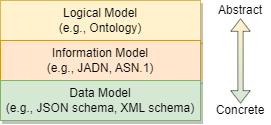
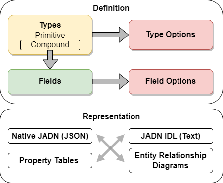
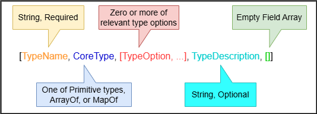
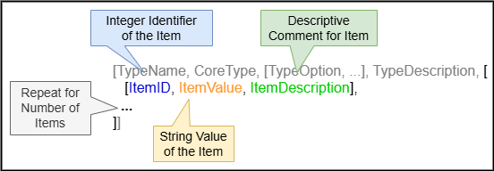

https://docs.oasis-open.org/openc2/imjadn/v1.0/cn01/imjadn-v1.0-cn01.md
(Authoritative)
https://docs.oasis-open.org/openc2/imjadn/v1.0/cn01/imjadn-v1.0-cn01.html
https://docs.oasis-open.org/openc2/imjadn/v1.0/cn01/imjadn-v1.0-cn01.pdf
https://docs.oasis-open.org/openc2/imjadn/v1.0/cnd01/imjadn-v1.0-cnd01.md
(Authoritative)
https://docs.oasis-open.org/openc2/imjadn/v1.0/cnd01/imjadn-v1.0-cnd01.html
https://docs.oasis-open.org/openc2/imjadn/v1.0/cnd01/imjadn-v1.0-cnd01.pdf
https://docs.oasis-open.org/openc2/imjadn/v1.0/imjadn-v1.0.md
(Authoritative)
https://docs.oasis-open.org/openc2/imjadn/v1.0/imjadn-v1.0.html
https://docs.oasis-open.org/openc2/imjadn/v1.0/imjadn-v1.0.pdf
OASIS Open Command and Control (OpenC2) TC
Duncan Sparrell (duncan@sfractal.com), sFractal Consulting LLC
Michael Rosa (mjrosa@nsa.gov), National Security Agency
David Kemp (d.kemp@cyber.nsa.gov), National Security Agency
This document is related to:
Information models (IMs) are used to define and generate physical data models, validate information instances, and enable lossless translation across data formats. JSON Abstract Data Notation (JADN) is a UML-based information modeling language that defines data structure independently of data format. This Committee Note describes the use of IMs, explains how to construct IMs using JADN, and contrasts IMs with other modeling approaches, such as Entity-Relationship models for databases, and knowledge models / ontologies.
This is a Non-Standards Track Work Product. The patent provisions of the OASIS IPR Policy do not apply.
This document was last revised or approved by the OASIS Open Command and Control (OpenC2) TC on the above date. The level of approval is also listed above. Check the "Latest stage" location noted above for possible later revisions of this document. Any other numbered Versions and other technical work produced by the Technical Committee (TC) are listed at https://www.oasis-open.org/committees/tc_home.php?wg_abbrev=openc2#technical.
TC members should send comments on this document to the TC's email list. Others should send comments to the TC's public comment list, after subscribing to it by following the instructions at the "Send A Comment" button on the TC's web page at https://www.oasis-open.org/committees/openc2/.
When referencing this document the following citation format should be used:
[IM-JADN-v1.0]
Information Modeling with JADN Version 1.0. Edited by David Kemp. 19 April 2023. OASIS Committee Note 01. https://docs.oasis-open.org/openc2/imjadn/v1.0/cn01/imjadn-v1.0-cn01.html. Latest stage: https://docs.oasis-open.org/openc2/imjadn/v1.0/imjadn-v1.0.html.
Copyright © OASIS Open 2023. All Rights Reserved.
Distributed under the terms of the OASIS IPR Policy.
The name "OASIS" is a trademark of OASIS, the owner and developer of this specification, and should be used only to refer to the organization and its official outputs.
For complete copyright information please see the full Notices section in Appendix F.
List of Figures
List of Tables
An Information Model (IM) defines the essential content of messages used in computing, independently of how those messages are represented (i.e., serialized) for communication or storage. This Committee Note (CN) describes the nature of an IM, and the application of the JSON Abstract Data Notation [JADN] information modeling language in the creation and use of IMs.
This section provides the background for the creation of JADN as an information modeling language for a spectrum of applications.
The OpenC2 Architecture Specification [OpenC2-Arch-v1.0] abstract defines the objective of OpenC2:
Open Command and Control (OpenC2) is a concise and extensible language to enable machine-to-machine communications for purposes of command and control of cyber defense components, subsystems and/or systems in a manner that is agnostic of the underlying products, technologies, transport mechanisms or other aspects of the implementation.
The OASIS OpenC2 Technical Committee (TC) recognized the need to define the OpenC2 Language [OpenC2-Lang-v1.0] in an implementation-independent manner in order to achieve the project's goals to be "agnostic of the underlying products, technologies, transport mechanisms or other aspects of the implementation". In response, the TC created an information modeling language, JSON Abstract Data Notation [JADN], to support the information modeling needed to define OpenC2 in that manner.
It is important to recognize that while JADN was created to facilitate the development of OpenC2, it is an independent specification, and can be used for any information modeling application.
The IETF, in the Report from the Internet of Things (IoT) Semantic Interoperability (IOTSI) Workshop 2016 [RFC 8477], attributed challenges in achieving interoperability to a lack of information modeling:
One common problem is the lack of an encoding-independent standardization of the information, the so-called information model. Another problem is the strong relationship between data formats and the underlying communication architecture
A key term in the above is "encoding-independent". An IM defines the essential content of messages used in computing, independently of how those messages are represented (i.e., serialized) for communication or storage. IMs are used to define and generate physical data models, validate information instances, and enable lossless translation across data formats. While JADN was created by the OpenC2 TC, it is entirely general purpose in its design and can be used to create IMs for nearly any purpose. Examples of other possible JADN applications include defining:
[RFC 8477] defines information models and data models to clarify the differences (emphasis added):
Information Model -- An information model defines an environment at the highest level of abstraction and expresses the desired functionality. Information models can be defined informally (e.g., in prose) or more formally (e.g., Unified Modeling Language (UML), Entity- Relationship Diagrams, etc.). Implementation details are hidden.
Data Model -- A data model defines concrete data representations at a lower level of abstraction, including implementation- and protocol-specific details. Some examples are SNMP Management Information Base (MIB) modules, World Wide Web Consortium (W3C) Thing Description (TD) Things, YANG modules, Lightweight Machine-to-Machine (LwM2M) Schemas, Open Connectivity Foundation (OCF) Schemas, and so on.
Expanding somewhat on the RFC 8477 hierarchy, a JADN information model is positioned within three abstraction levels, the highest being:
The layering of these models is illustrated in Figure 1-1.

JADN is based on Information Theory [Info-Theory], which provides a concrete way of quantifying information that is explicitly independent of both semantic meaning and data representation. A JADN IM links model-defined semantic types with JADN-defined core information types, providing an unambiguous bridge between semantics and data. This supports implementation flexibility while maintaining interoperable information exchange across implementations.
As an IM language, JADN is a syntax-independent, or abstract, schema language. Abstract schema languages separate structure definitions from encoding rules. JADN is oriented to work well with common Internet data formats, such as
JADN is based rigorously on information theory, and an IM composed in JADN formally defines equivalence of information content between data in different formats.
This CN discusses:
This CN uses the definitions contained in the [JADN Specification], section 1.2.1. The following additional terms are defined for this document:
Directed Acyclic Graph: A directed acyclic graph
(DAG) is a directed graph with no directed cycles. That is, it consists
of vertices and edges (also called arcs), with each edge directed from
one vertex to another, such that following those directions will never
form a closed loop. A directed graph is a DAG if and only if it can be
topologically ordered, by arranging the vertices as a linear ordering
that is consistent with all edge directions
(Wikipedia, https://en.wikipedia.org/wiki/Directed_acyclic_graph)
Entity Relationship Model: An
entity–relationship model (or ER model) describes interrelated things of
interest in a specific domain of knowledge. A basic ER model is composed
of entity types (which classify the things of interest) and specifies
relationships that can exist between entities (instances of those entity
types).
(Wikipedia, https://en.wikipedia.org/wiki/Entity%E2%80%93relationship_model)
Schema: (markup languages) A formal
description of data, data types, and data file structures, such as XML
schemas for XML files.
(Wiktionary, https://en.wiktionary.org/wiki/schema#Noun,
definition #3)
Ontology: (information science) A
representation, formal naming, and definition of the categories,
properties, and relations between the concepts, data, and entities that
substantiate one, many, or all domains of discourse. More simply, an
ontology is a way of showing the properties of a subject area and how
they are related, by defining a set of concepts and categories that
represent the subject.
(Wikipedia, https://en.wikipedia.org/wiki/Ontology_(computer_science))
This section discusses the nature and benefits of IMs, the role of serialization, types of available modeling languages, and tools that can be used in information modeling.
A basic problem with discussing information models is that the terms "information" and "data" are used widely but defined imprecisely. The use of these terms across technical literature has considerable variation and overlap. As described in What is Shannon information? [Lombardi], a precise definition of "information" is a relatively recent development:
Nevertheless, it is traditionally agreed that the seminal work for the mathematical view of information is the paper where Claude Shannon (1948) introduces a precise formalism designed to solve certain specific technological problems in communication engineering. ... Nowadays, Shannon’s theory is a basic ingredient of the communication engineers training.
Shannon's original article was later published as a book and gave rise to the field of Information Theory [Shannon].
A small example may help clarify the concept of information. The information content of an instance can be no greater than the smallest data instance for which lossless round-trip conversion is possible. For example, an IPv4 address represented in dotted quad format is 17 bytes of JSON string data ("192.168.101.213"), but can be converted to 4 byte RFC 791 format and back without loss. The information content of an IPv4 address can therefore be no greater than 4 bytes (32 bits), and an information model would define the IPv4 address type as a byte sequence of length 4.
For the purpose of understanding information modeling, it is helpful to think in terms of different levels of representation:
These levels correspond, respectively, to the Data, Information, and Logical models illustrated above in Figure 1-1.
The external representation requires a data model to describe how information is transmitted or stored; such a data model provides specific formats and syntax (e.g., defining serialization rules) that permit moving the data out of the system where it is being processed. The internal representation depends on an information model, which uses abstract terminology to focus on what the information represents (e.g., a name, an address). As described in [YTLee]'s 2008 paper on information modeling:
The conceptual view is a single, integrated definition of the data within an enterprise that is unbiased toward any single application of data and independent of how the data is physically stored or accessed. It provides a consistent definition of the meanings and interrelationship of the data in order to share, integrate, and manage the data.
Note that while this description uses the term "data", the more important terms are "unbiased", "independent", "consistent", and "meanings and interrelationship".
A common language for defining conceptual models is OWL (Web Ontology Language, see OWL-Primer). An abstract information model, such as can be created with JADN, bridges between the conceptual model (described using OWL or similar languages), and and the external (or concrete) representation in a selected data format. JADN directly models the Shannon information for creating serialized data in one or more desired formats. By creating the information model to bridge concept to representation, the concept of "information equivalence" is applied: the same information model can be used to generate both self-describing (verbose) data and concise data for production environments.
As described in the introduction, IMs are a means to understand and document the essential information content relevant to a system, application, or protocol exchange without regard to how that information is represented in actual implementations. Having a clear view of the information required provides clarity regarding the goals that the eventual implementation must satisfy.
[RFC 3444] describes the purpose of an IM as:
"to model managed objects at a conceptual level, independent of any specific implementations or protocols used to transport the data. ... Another important characteristic of an IM is that it defines relationships between managed objects."
[YTLee] describes an IM as follows:
"An information model is a representation of concepts, relationships, constraints, rules, and operations to specify data semantics for a chosen domain of discourse."
[RFC3444] contrasts IMs with data models (DMs):
"Compared to IMs, DMs define managed objects at a lower level of abstraction. They include implementation- and protocol-specific details, e.g., rules that explain how to map managed objects onto lower-level protocol constructs."
and states DMs are "intended for implementors and include protocol-specific constructs".
The following key principles apply to IMs:
An information model classifies the validity of serialized data with zero false positives and zero false negatives. That is, an information model is the authoritative definition of essential content, and any serialized data is unambiguously one of: a) consistent with, b) inconsistent with, or c) insignificant with respect to, the model.
Information instances are values that can be compared for equality. An application compares instances in accordance with the UML properties defined by their datatype. Two instances are equal if they have the same datatype and the same value.
If an instance can be losslessly converted among multiple serializations, then its information content is no greater than the smallest of those serializations.
A key point in all the IM definitions and descriptions in the previous section is the ability for the model to represent information with a focus on its meaning, and without concern for how that information will be represented. Focusing on meaning encourages interoperability between applications by capturing agreement about what the information conveys and how it can be used, deferring decisions on storage and transmission matters until a clear understanding of purpose has been reached. Referring back to the example of the IPv4 address, regardless of representation the address identifies the label applied to a network interface within an available address space of 2^32.
[YTLee] identifies the key benefit of an IM:
"The advantage of using an information model is that it can provide sharable, stable, and organized structure of information requirements for the domain context."
and describes a "quality" IM as being:
To sum up, in DThaler's paper on IoT Bridge Taxonomy, which addresses the challenges created when "many organizations develop and implement different schemas for the same kind of things", the concluding Recommendations section includes the following:
To ... increase semantic interoperability, it is desirable that different data models for the same type of thing (e.g., light bulbs) are as similar as possible for basic functionality. In an ideal world, data models used by different protocols and organizations would express exactly the same information in ways that are algorithmically translatable by a dynamic schema bridge with no domain-specific knowledge. Sharing data models more widely, and having agreements in principle of at least using the same abstract information model, would be very beneficial.
The notion of "express[ing] exactly the same information in ways that are algorithmically translatable" is a fundamental purpose of information modeling, and aligns with the JADN concept of information equivalence.
Information exists in the minds of users (producers and consumers), in the state of applications running on systems, and in the data exchanged among applications. Serialization converts application information into byte sequences (a.k.a. protocol data units, messages, payloads, information exchange packages) that can be validated, communicated and stored. De-serialization parses payloads back into application state. Serialization is not a goal in and of itself, it is the mechanism by which applications exchange information in order to make it available to users.

Serialization and deserialization are intimately connected to the chosen format: the same data can be serialized in JSON, CBOR, and XML, and while the serialized data will look very different, the received information that is recovered by deserialization should match the transmitted information. The [JADN Specification] include serialization rules for four different formats:
The specification also describes what is needed to connect JADN and IMs defined in JADN to other serialization formats:
Regardless of format, serialization should be:
As noted above, serialization is an important aspect of implementation, but it is a means to an end. The user cares about the information the serialized data represents, not the format by which it is moved from system to system. An Automated Teller Machine customer cares about their bank balance, and an airline customer cares that their tickets are for the proper flights. How the information system handles the bits to make that happen is of no concern to the customer.
Shannon's information theory defines the relationship between information and serialization (coding). Mathematicians characterize conditions applied to a mechanism as necessary and/or sufficient: a serialization that omits necessary data loses information, one that uses more data than sufficient conveys no extra information, and potentially wastes storage or communications bandwidth. However, particular requirements (e.g., human readability) may indicate that a serialization that uses more data than sufficient is appropriate for particular situations.
[YTLee] describes an IM language as follows:
"An information modeling language is a formal syntax that allows users to capture data semantics and constraints."
and defines their importance:
"Formal information modeling languages that describe information requirements unambiguously is an enabling technology that facilitates the development of a large scale, networked, computer environment that behaves consistently and correctly."
Report from IoT Semantic Interoperability Workshop 2016 [RFC 8477] describes a lack of consistency across Standards Developing Organizations (SDOs) in defining application layer data, attributing it to the lack of an encoding-independent standardization of the information represented by that data. The JADN information modeling language is intended to address that gap. Abstract Syntax Notation One [ASN.1] is another example of an abstract schema language.
JADN is a syntax-independent schema language, based on Unified Modeling Language (UML) datatypes. JADN is designed to work with common Internet data formats (JSON, XML, CBOR), providing a schema to support them. JADN is also graph-oriented to align with the web and database design practices, with options to identify primary and foreign keys, including web URLs..
JADN's native format is structured JSON, and a broad variety of tools exist for creating and manipulating information in JSON format.
ASN.1 is a formal notation used for describing data transmitted by telecommunications protocols, regardless of language implementation and physical representation of these data, whatever the application, whether complex or very simple. The notation provides a certain number of pre-defined basic types, and makes it possible to define constructed types. Subtyping constraints can be also applied on any ASN.1 type in order to restrict its set of values. Data described in ASN.1 is serialized and deserialized based on set of encoding rules, which are defined for a broad variety of formats including the Basic Encoding Rules (BER) and similar, which are closely associated with ASN.1, as well as less closely tied standards such as XML and JSON.
Other languages have been used for information modeling, although that is not their primary purposes. Some examples are Unified Modeling Language [UML], and Integration DEFinition for information modeling [IDEF1X].
The value of an IM language multiplies when automated tooling is available to support creation, maintenance, and use of models created in that language. The need for tools is discussed in [RFC 8477], citing particularly the need for code generation and debugging tools. A tool set to support an IM language should provide
A primary application of an IM is in the translation of data into and out of in-memory representation and serialized formats for storage and transmission. The IM defines the types, organization, and validation requirements for the information manipulated by an application or protocol. Within an application the IM is instantiated through the data structures and types supported by the chosen programming language. The IM also guides the creation of routines to parse and validate data being input from storage or through communications, and to serialize data being output to storage or transmission. Deriving the processing capabilities from the IM ensures consistency as the data is manipulated. Figure 2-2 illustrates the concept of applying an IM to manage the associated data.

The internal representation, illustrated in Figure 2-1 as a tree, is guided by rules associated with applying the IM:
The JADN Specification [JADN-v1.0] defines 12 core types, which are described in Section 3.1.7 of this CN. The JADN Specification also defines serialization rules for JSON (with three levels of verbosity) and CBOR [RFC7409]. Supporting a new data format ("external representation") requires defining serialization rules to translate each core type to that data format.
As an example, consider an information element defined as a boolean type, which is the simplest core type. The essential nature of a boolean is that it is limited to only two values, usually identified as "true" and "false". However, the data representing a Boolean value is determined by serialization rules, and could be any of "false" and "true", 0 and 1, "n" and "y", etc. In a programming language, many variable types and values may evaluate as "true":
An abstract representation of an IM does not capture data types and values for a Boolean node, e.g. integer 0 or 37 or string "yes". It has only the characteristics of the node type: false or true. A JSON representation can use a Boolean type with values 'false' and 'true', but for efficient serialization might also use the JSON number type with values 0 and 1.
This section provides a brief overview of JADN, and describes the use of JADN in information modeling.
Figure 3-1 provides a high-level view of the JADN concepts that will be described in this section. JADN provides simple and compound data types that can be refined using type and field options (field options only apply within compound types). JADN can also be represented in multiple formats, both textual and graphical, and automated tooling can transform a JADN model between the different representations without loss of information. The Native JADN representation as JSON data is authoritative, but each representation has advantages.

The JADN information modeling language was developed against specific objectives:
As described in the JADN Specification [JADN-v1.0] introduction:
JADN is a formal description technique that combines type constraints from the Unified Modeling Language (UML) with data abstraction based on information theory and structural organization using results from graph theory.
EDITOR'S NOTE: consider whether the following adds clarity or confusion; it might need to be re-written to guide the reader through the concepts a bit more.
From UML JADN takes the concept of modeling information/data using Simple Classifiers (see [UML], 10.2 Datatypes) as opposed to the common practice of using Structured Classifiers ([UML], 11.4 Classes), which do not define data in a unique way that can be validated and signed. The JADN use of the UML primitive types defined in [UML], Table 21.1, can be found in Appendix D.1.
The [JADN Specification] defines twelve base types:
| Primitive | Compound | Selection / Union |
|---|---|---|
| Binary | Array | Enumerated |
| Boolean | ArrayOf | Choice |
| Integer | Map | |
| Number | MapOf | |
| String | Record |
NOTE: The JADN v1.0 Committee Specification [JADN] uses the term "structured" rather than "compound" when referring to Array, ArrayOf, Map, MapOf, and Record types. An update is planned to change the specification to use "compound" in order to avoid any potential confusion with UML's use of "structured".
Each of the compound types is a container, a named group of related items such as the latitude and longitude of a geographic coordinate, or the set of properties of an object. In addition to its individual items, every container has multiplicity attributes, including limits on the number of items, whether the items have a sequential ordering, and whether duplicate items are allowed.
The JADN compound type and its options are chosen for an IM based on the information characteristics to be modeled:
and the decision tree for which compound type to use is shown in Table 3-1:
| Value / Mapping | Same / Individual | JADN Type |
|---|---|---|
| Value | Same | ArrayOf(ValueType) |
| Value | Individual | Array |
| Key:Value | Same | MapOf(KeyType, ValueType) |
| Key:Value | Individual | Map or Record |
For the last information type - containers of individually-defined key:value pairs - JADN provides two types: Map and Record. The difference is that Record keys have a sequential ordering while Map keys do not. Map instances are always serialized as key:value pairs, while Record instances may be serialized as either key:value pairs or table rows with values in column position, depending on data format.
For example if Location is a Record type with name, state, latitude and longitude keys, its instances are serialized using verbose JSON data format as:
[
{
"name": "St. Louis",
"state": "Missouri",
"latitude": "38.627003",
"longitude": "-90.199402"
},
{
"name": "Seattle",
"state": "Washington",
"latitude": "47.60621",
"longitude": "-122.33207"
}
]The same Record values are serialized using compact JSON data format (where the column positions are 1: name, 2: state, 3: latitude, 4: longitude) as:
[
["St. Louis", "Missouri", "38.627003", "-90.199402"],
["Seattle", "Washington", "47.60621", "-122.33207"]
]If Location is a Map type, its instances are always serialized as key:value pairs regardless of data format, the same as a Record in verbose JSON.
**
Another significant UML concept is that JADN distinguishes among all four multiplicity types ([UML], Table 7.1), while logical models typically support only sets. Table 3-2 replicates the information from UML Table 7.1 and adds the equivalent JADN types. Note that the UML Specification cites the "traditional names" in its "Collection Type" column.
| isOrdered | isUnique | Collection Type |
JADN Type |
|---|---|---|---|
| false | true | Set | ArrayOf+set, MapOf |
| true | true | OrderedSet | ArrayOf+unique |
| false | false | Bag | ArrayOf+unordered |
| true | false | Sequence | ArrayOf |
JADN accepts the UML philosophy that schemas are classifiers that take a unit of data and determine whether it is an instance of a datatype, and recognizes the idea of generalization ([UML], 9.9.7) through use of the Choice type.
Beyond these UML concepts, JADN recognizes that information models are directed graphs with a small predefined set of base datatypes and only two kinds of relationship: "contain" and "reference".
Figure 3-2 summarizes the structure of a JADN Type Definition, and identifies values for each of the five elements in the definition; the elements must appear in the order listed here. The five elements are:

A firm requirement of JADN is that a TypeName must not be a JADN predefined type. There are also conventions intended to improve the consistency and readability of JADN specifications. These conventions are defined in JADN but can be overridden within a JADN schema if desired (see section 3.1.2 of the [JADN Specification]):
TypeNames are written in PascalCase or Train-Case (using hyphens) with an initial upper case letter, and are limited to 64 upper case, lower case or numeric characters, or the "system" character (used for tool-generated type definitions).
FieldNames are written in camelCase or snake_case (using underscores) with an initial lower case letter, and are limited to 64 upper case, lower case or numeric characters.
Name space identifiers (nsids) are limited to 8 upper case, lower case or numeric characters and must begin with a letter.
The "system character" (which defaults to
$) is used by JADN processing tools when generating derived
types while processing a JADN model; it is not normally used by JADN
schema authors.
The third element of a JADN type definition is an array of zero or more of the TypeOptions defined in section 3.2.1 of the [JADN Specification]. JADN includes options for both types (discussed in this section) and fields (discussed in section 3.1.4). As explained in the JADN Specification:
Each option is a text string that may be included in TypeOptions or FieldOptions, encoded as follows:
- The first character is the option ID.
- The remaining characters are the option value.
TypeOptions are classifiers that, along with the base type, determine whether data values are instances of the defined type. For example, the pattern TypeOption is used with the String BaseType to define valid instances of that string type using a regular expression conforming to [ECMAScript] grammar.
Table 3-3 lists the complete set of type options, including the option name, type, ID character, and description; the ID characters are used in standard JADN representation (section 3.1.5.1) when specifying type options.
| Option | Type | ID | Description |
|---|---|---|---|
| id | Boolean | = |
Items and Fields are denoted by FieldID rather than FieldName |
| vtype | String | * |
Value type for ArrayOf and MapOf |
| ktype | String | + |
Key type for MapOf |
| enum | String | # |
Extension: Enumerated type derived from a specified type |
| pointer | String | > |
Extension: Enumerated type pointers derived from a specified type |
| format | String | / |
Semantic validation keyword |
| pattern | String | % |
Regular expression used to validate a String type |
| minf | Number | y |
Minimum real number value |
| maxf | Number | z |
Maximum real number value |
| minv | Integer | { |
Minimum integer value, octet or character count, or element count |
| maxv | Integer | } |
Maximum integer value, octet or character count, or element count |
| unique | Boolean | q |
ArrayOf instance must not contain duplicate values |
| set | Boolean | s |
ArrayOf instance is unordered and unique |
| unordered | Boolean | b |
ArrayOf instance is unordered |
| extend | Boolean | X |
Type is extensible; new Items or Fields may be appended |
| default | String | ! |
Default value |
Detailed explanations of each type option can be found in Sections 3.2.1.1-12 of the [JADN Specification].
The minv and maxv type options are
distinctive in that they can apply to both primitive and compound types,
with a different meaning in these two applications:
minv and maxv type options constrain the
values an instance of that type may hold. Specifically, when
applied to:
minv and maxv type
options constrain the numeric values an instance of that type may
hold.minv and maxv type
options constrain the number of characters in the string.minv and maxv type
options constrain the number of octets (bytes) in the binary value.For example, the following specifies an Integer type that can be
assigned values between 1 and 1000, using both
JADN (see section
3.5.1.1) and JIDL notation (see section 3.5.1.2):
["count","integer",["{1", "}1000"], "count of objects",[]]
// define a restricted count value
count = integer {1..1000} // count of objectsminv and maxv type options
constrain the number of elements an instance of that type may
have. For example, the following specifies a Record type that must have
at least two fields populated, even though only one field is required
(fields field_2 and field_3 are indicated as
optional by the ["[0"] field option [see Section 3.1.4]):["RecordType", "Record", ["{2"], "requires field_1 and either or both field_2 and field_3", [
[1, "field_1", "String", [], ""],
[2, "field_2", "String", ["[0"], ""],
[3, "field_3", "String", ["[0"], ""],
]]
RecordType = Record {2..*} // requires field_1 and either or both field_2 and field_3
1 field_1 String
2 field_2 String optional
3 field_3 String optional Table 3-4 summarizes the applicability of type options to JADN base types.
| Binary | Boolean | Integer | Number | String | Array | ArrayOf | Map | MapOf | Record | Choice | Enumerated | |
|---|---|---|---|---|---|---|---|---|---|---|---|---|
| id | X | X | X | |||||||||
| vtype | X | X | ||||||||||
| ktype | X | |||||||||||
| enum | X | |||||||||||
| pointer | X | |||||||||||
| format | X | X | X | X | X | |||||||
| pattern | X | |||||||||||
| minf | X | |||||||||||
| maxf | X | |||||||||||
| minv | X | X | X | X | X | X | X | X | ||||
| maxv | X | X | X | X | X | X | X | X | ||||
| unique | X | |||||||||||
| set | X | |||||||||||
| unordered | X | |||||||||||
| extend | X | X | X | X | X | |||||||
| default |
The use of the Fields element to convey Item or Field Definitions is dependent on the BaseType selected, as illustrated in Figure 3-2. The rules pertaining to the Fields array are as follows:
If the BaseType is a Primitive type, ArrayOf, or MapOf, no fields are permitted (i.e., the Fields array must be empty).
If the BaseType is Enumerated, the fields for each item definition in the Fields array are described with three elements:
If the BaseType is Array, Choice, Map, or Record, the fields for each item definition in the Fields array are described with five elements:
Compound types containing Items or Fields support field options in addition to the type options described in Section 3.1.2. JADN defines six field options. As with the type options described in section 3.1.2, the ID characters are used in standard JADN representation (section 3.1.5.1) when specifying field options. Table 3-5 lists the JADN field options.
| Option | Type | ID | Description | JADN Spec Section |
|---|---|---|---|---|
| minc | Integer | [ |
Minimum cardinality, default = 1, 0 = optional | 3.2.2.1 |
| maxc | Integer | ] |
Maximum cardinality, default = 1, 0 = default max, >1 = array | 3.2.2.1 |
| tagid | Enumerated | & |
Field containing an explicit tag for this Choice type | 3.2.2.2 |
| dir | Boolean | < |
Pointer enumeration treats field as a group of items | 3.3.5 |
| key | Boolean | K |
Field is a primary key for this type | 3.3.6 |
| link | Boolean | L |
Field is a foreign key reference to a type instance | 3.3.6 |
The type options described in Section 3.1.2 can also apply to fields, with the constraint that the type option must be applicable to the field's type, as described in the base type examples in Section 3.1.7. The application of a type option to a field triggers an "anonymous" type definition when the JADN model is processed, as described in Section 3.1.6.
The native format of JADN is JSON, but JADN content can be represented in other ways that are often easier to edit or more useful for documentation. This section describes the JSON content used for each of the JADN basic types, and then illustrates the other representations using a simple example.
This section illustrates the JSON representations of the Base Types described in Section 3.1. Depictions are provided for each of three ways that the Fields array is used, depending on the base type used in a particular type definition.
Figure 3-3 illustrates the structure of JADN for defining any Primitive BaseType, or ArrayOf or MapOf type; for all of these the Fields array is empty:

Figure 3-4 illustrates the structure of JADN for defining an Enumerated BaseType; for enumerations each item definition in the Fields array has three elements:

Figure 3-5 illustrates the structure of JADN for defining a BaseType of Array, Choice, Map, or Record; for these types each field definition in the Fields array has five elements:

The [JADN Specification] identifies three formats (Section 5) in addition to the native format:
The formal definitions of each of these types are found in sections 5.1, 5.2, and 5.3, respectively, of the [JADN Specification].
Automated tooling makes it straightforward to translate among all four of these formats in a lossless manner, and each format has its advantages:
The table style and ERD representations can be readily generated in an automated manner by translating the JADN schema to source code for rendering in various formats. For example, tables can be created using Markdown or HTML code, and ERDs can be created from code for rendering engines such as [Graphviz] or [PlantUML].
When defining elements of type Array or Enum.ID in JIDL, no field
names are used. These types are defined using a field ID and a TypeName.
For documentation and debugging purposes a FieldName can be included in
the JIDL comment field, immediately following the // and
followed by a double colon delimiter (i.e., ::). For more
information see the [JADN] Specification
descriptions of Field Identifiers (section 3.2.1.1) and JADN-IDL format
(section 5.1). Here is a brief JIDL example of this format:
Publication-Data = Array // who and when of publication
1 String // label:: name of record label
2 String /date // rel_date:: and when did they let this dropThe JADN Specification [JADN-v1.0], section 5.3, uses a simple example of an IM for a university to illustrate the use of ERDs for IMs. This section uses that ERD as a starting point for an example to illustrate the various JADN representations described in Section 3.1.5.2. The example begins with the ERD for the model:

The package (see Section 4.1) containing the JADN corresponding to the above ERD is shown here:
{
"info": {
"package": "http://example.com/uni",
"exports": ["University"]
},
"types": [
["University", "Record", [], "A place of learning", [
[1, "name", "String", [], "University Name"],
[2, "classes", "ArrayOf", ["*Class"], "Available classes"],
[3, "people", "ArrayOf", ["*Person"], "Students and faculty"]
]],
["Class", "Record", [], "Pertinent info about classes", [
[1, "name", "String", [], "Name of class"],
[2, "room", "String", [], "Where it happens"],
[3, "teachers", "Person", ["L", "]0", "q"], "Teacher(s) for this class"],
[4, "students", "Person", ["L", "]0", "q"], "Students attending this class"],
[5, "syllabus", "String", ["/uri"], "Link to class syllabus on the web"]
]],
["Person", "Record", [], "", [
[1, "name", "String", [], "Student / faculty member name"],
[2, "univ_id", "UnivId", ["K"], "Unique ID for student / faculty member"],
[3, "email", "String", ["/email"], "Student / faculty member email"]
]],
["UnivId", "String", ["%^U-\\d{6}$"], "University ID (U-nnnnnn)", []]
]
}Converting the JSON to JIDL yields a representation that is both more readable and easier to edit:
package: "http://example.com/uni"
exports: ["University"]
University = Record // A place of learning
1 name String // University Name
2 classes ArrayOf(Class) // Available classes
3 people ArrayOf(Person) // Students and faculty
Class = Record // Pertinent info about classes
1 name String // Name of class
2 room String // Where it happens
3 teachers Link(Person unique) [1..*] // Teacher(s) for this class
4 students Link(Person unique) [1..*] // Students attending this class
5 syllabus String /uri // Link to class syllabus on the web
Person = Record
1 name String // Student / faculty member name
2 univ_id Key(UnivId) // Unique ID for student / faculty member
3 email String /email // Student / faculty member email
UnivId = String{pattern="^U-\d{6}$"} // University ID (U-nnnnnn)Property tables are a common representation of data structures in specifications. JADN is easily converted to property tables, which are quite readable but somewhat more challenging to edit than JIDL (the package information has been omitted from the set of property tables).
A place of learning
Type: University (Record)
| ID | Name | Type | # | Description |
|---|---|---|---|---|
| 1 | name | String | 1 | University Name |
| 2 | classes | ArrayOf(Class) | 1 | Available classes |
| 3 | people | ArrayOf(Person) | 1 | Students and faculty |
Pertinent info about classes
Type: Class (Record)
| ID | Name | Type | # | Description |
|---|---|---|---|---|
| 1 | name | String | 1 | Name of class |
| 2 | room | String | 1 | Where it happens |
| 3 | teachers | Link(Person unique) | 1..* | Teacher(s) for this class |
| 4 | students | Link(Person unique) | 1..* | Students attending this class |
| 5 | syllabus | String /uri | 1 | Link to class syllabus on the web |
Type: Person (Record)
| ID | Name | Type | # | Description |
|---|---|---|---|---|
| 1 | name | String | 1 | Student / faculty member name |
| 2 | univ_id | Key(UnivId) | 1 | Unique ID for student / faculty member |
| 3 | String /email | 1 | Student / faculty member email |
| Type Name | Type Definition | Description |
|---|---|---|
| UnivId | String{pattern="^U-\d{6}$"} | University ID (U-nnnnnn) |
Finally, the code to generate the ERD presented at the beginning of the example is easily generated from the JADN model. In this specific example code for the widely-used GraphViz tool is provided.
# package: http://example.com/uni
# exports: ['University']
digraph G {
graph [fontname=Arial, fontsize=12];
node [fontname=Arial, fontsize=8, shape=record, style=filled, fillcolor=lightskyblue1];
edge [fontname=Arial, fontsize=7, arrowsize=0.5, labelangle=45.0, labeldistance=0.9];
bgcolor="transparent";
n0 [label=<{<b>University : Record</b>|
1 name : String<br align="left"/>
2 classes : ArrayOf(Class)<br align="left"/>
3 people : ArrayOf(Person)<br align="left"/>
}>]
n1 [label=<{<b>Class : Record</b>|
1 name : String<br align="left"/>
2 room : String<br align="left"/>
3 teachers : Link(Person unique) [1..*]<br align="left"/>
4 students : Link(Person unique) [1..*]<br align="left"/>
5 syllabus : String /uri<br align="left"/>
}>]
n2 [label=<{<b>Person : Record</b>|
1 name : String<br align="left"/>
2 univ_id : Key(UnivId)<br align="left"/>
3 email : String /email<br align="left"/>
}>]
n3 [label=<<b>UnivId : String{pattern="^U-\d{6}$"}</b>>, shape=ellipse, style=filled, fillcolor=palegreen]
n0 -> n1 [label=classes]
n0 -> n2 [label=people]
n1 -> n2 [label=teachers, style="dashed"]
n1 -> n2 [label=students, style="dashed"]
n2 -> n3 [label=univ_id]
}The [JADN Specification] conformance statement (section 7) separates the definition of JADN into "Core JADN" (sections 3.1, 3.2, 4, and 6) and "JADN Extensions" (section 3.3). Section 3.3 explains that extensions "make type definitions more compact or support the Don't Repeat Yourself (DRY) software design principle. Extensions are syntactic sugar that can be replaced by core definitions without changing their meaning." While the implementation of extensions by JADN tools is optional, in a conformance sense, the availability of extensions reduces the level of effort required by a JADN schema author and can make a schema more compact and understandable.
The JADN Specification also defines a "system character" (by default
the dollar sign, $) and in the Name Formats (section 3.1.2)
reserves the use of that character to automated tooling, saying "Schema
authors should not create TypeNames containing the System character, but
schema processing tools may do so".
Examples of the use of extensions and the role of the system character are provided in sections 3.3.1, 3.3.2, and 3.3.2 of the JADN Specification. As noted in Section 3.1.4, JADN Type Options can be applied to fields in compound types, but as explained in section 3.3.1 of the JADN Specification, this is an extension that leads to the anonymous definition of a new type when processed by automated tooling. The example provided there is:
Member = Record
1 name String
2 email String /emailUnfolding replaces this with:
Member = Record
1 name String
2 email Member$email
Member$email = String /email // Tool-generated type definition.The type definition for Member$email was generated by
the tooling, as both noted in the comment and indicated by the presence
of the $ character in the type name. The same result could
be achieved in Core JADN by defining a separate Email
type:
Member = Record
1 name String
2 email Email
Email = String /emailThe author(s) of an IM can determine whether the use of anonymous type definitions generated by JADN tooling improves the clarity of an model. For the example above, defining an email type that can be referenced throughout the model would likely be better than multiple, equivalent anonymous email types. In other cases the readability of the model can benefit from concisely written JADN (or JIDL) that relies on the tooling to generate the necessary types.
This section provides illustrative examples of the JADN base types. For each type, the definition from the [JADN Specification] is quoted, the relevant type options are listed, and an example is provided using the JADN and JIDL formats.
Definition: A sequence of octets. Length is the number of octets.
TypeOptions: The minv, maxv, and format TypeOptions are applicable to the Binary data type.
Example: The Binary type is used for representing arbitrary binary data. An information item fitting a Binary type would be defined as follows:
["FileData", "Binary", [], "Binary contents of file", []]The corresponding JIDL representation would be:
// Example JIDL definition of a binary datatype
FileData = Binary // Binary contents of fileTable 3-6 lists the format options applicable to the Binary type:
| Keyword | Type | Requirement |
|---|---|---|
| eui | Binary | IEEE Extended Unique Identifier (MAC Address), EUI-48 or EUI-64 as specified in EUI |
| ipv4-addr | Binary | IPv4 address as specified in RFC 791 Section 3.1 |
| ipv6-addr | Binary | IPv6 address as specified in RFC 8200 Section 3 |
Definition: An element with one of two values: true or false.
TypeOptions: No TypeOptions are applicable to the Boolean data type.
Example: The Boolean type is used for representing bi-valued (i.e., true/false, yes/no, on/off) information. An information item fitting a Boolean type would be defined as follows:
["AccessGranted", "Boolean", [], "Result of access control decision", []]The corresponding JIDL representation would be:
// Example JIDL definition of a boolean datatype
AccessGranted = Boolean // Result of access control decisionDefinition: A positive or negative whole number.
TypeOptions: The minv, maxv, and format TypeOptions are applicable to the Integer data type.
Example: The Integer type is used for representing numerical information with discrete integer values. An information item fitting an Integer type would be defined as follows:
["TrackNumber", "Integer", [], "Track number for current song", []]The corresponding JIDL representation would be:
// Example JIDL definition of an Integer datatype
TrackNumber = Integer // Track number for current songTable 3-7 lists the format options applicable to the Integer type:
| Keyword | Type | Requirement |
|---|---|---|
| i8 | Integer | Signed 8 bit integer, value must be between -128 and 127. |
| i16 | Integer | Signed 16 bit integer, value must be between -32768 and 32767. |
| i32 | Integer | Signed 32 bit integer, value must be between -2147483648 and 2147483647. |
| u<n> | Integer | Unsigned integer or bit field of <n> bits, value must be between 0 and 2^<n> - 1. |
Definition: A real number.
TypeOptions: The minf, maxf, and format TypeOptions are applicable to the Number data type.
Example: The Number type is used for representing numerical information with continuous values. An information item fitting a Number type would be defined as follows:
["Temperature", "Number", [], "Current temperature observation in degrees C", []]The corresponding JIDL representation would be:
// Example JIDL definition of an Number datatype
Temperature = Number // Current temperature observation in degrees CTable 3-8 lists the format options applicable to the Number type. These format options are only relevant when serializing using CBOR; see the [JADN Specification], Section 4.4:
| Keyword | Type | Requirement |
|---|---|---|
| f16 | Number | float16: Serialize as IEEE 754 Half-Precision Float (#7.25). |
| f32 | Number | float32: Serialize as IEEE 754 Single-Precision Float (#7.26). |
Definition: A sequence of characters, each of which has a Unicode codepoint. Length is the number of characters.
TypeOptions: The minv, maxv, format, and pattern TypeOptions are applicable to the String data type.
Example: The String type is used for representing information best presented as text. An information item fitting a String type would be defined as follows:
["TrackTitle", "String", [], "Title of the song in the selected track", []]The corresponding JIDL representation would be:
// Example JIDL definition of an String datatype
TrackTitle = String // Title of the song in the selected trackAll semantic validation keywords defined in Section 7.3 of [JSON Schema] are valid format options for the String type.
The pattern option in JADN is identified by the
% type option character followed immediately by the regular
expression to be applied, with the entire option contained in
double-quotes. When applying the pattern option in JIDL, it
should be directly connected to the String type name. The
JIDL pattern specification is surrounded with braces "{ }", containing
pattern="REGEX" where REGEX is the regular
expression that governs the format of the string. Here are the JADN and
JIDL presentations of a String with an associated pattern:
["Barcode", "String", ["%^\d{12}$"], "A UPC-A barcode is 12 digits", []]
Barcode = String{pattern="^\d{12}$"} // A UPC-A barcode is 12 digitsThe JADN Specification states (section 3.2.1.6):
The pattern value SHOULD conform to the Pattern grammar of ECMAScript Section 21.2.
and references the 9th edition (published in 2018) of the [ECMAScript] specification. The pattern grammar in the current 15th edition (published in 2022) of the specification is in Section 22.2.
Definition: A vocabulary of items where each item has an id and a string value.
TypeOptions: The id, enum, pointer, and extend TypeOptions are applicable to the Enumerated data type.
Example: The Enumerated type is used to represent information that has a finite set of applicable values. An information item fitting the Enumerated type would be defined as follows:
["L4-Protocol", "Enumerated", [], "Value of the protocol (IPv4) or next header (IPv6) field in an IP packet. Any IANA value, [[RFC5237]](#rfc5237)", [
[1, "icmp", "Internet Control Message Protocol - [RFC0792]"],
[6, "tcp", "Transmission Control Protocol - [RFC0793]"],
[17, "udp", "User Datagram Protocol - [RFC0768]"],
[132, "sctp", "Stream Control Transmission Protocol - [RFC4960]"]
]]The corresponding JIDL representation would be:
// Example JIDL definition of an Enumerated datatype
L4-Protocol = Enumerated // Value of the protocol (IPv4) or next header (IPv6)
// field in an IP packet. Any IANA value per RFC5237
1 icmp // Internet Control Message Protocol - [RFC0792]
6 tcp // Transmission Control Protocol - [RFC0793]
17 udp // User Datagram Protocol - [RFC0768]
132 sctp // Stream Control Transmission Protocol - [RFC4960]EDITOR'S NOTE: need examples of applying the TypeOptions
Definition: A discriminated union: one type selected from a set of named or labeled types.
TypeOptions: The id and extend TypeOptions are applicable to the Choice data type.
Example: The Choice type is used to represent information limited to selecting one type from a defined set of named or labeled types. An information item fitting the Choice type would be defined as follows:
["IdentityType", "Choice", [], "Nature of the referenced identity", [
[1, "person", "Person", [], "Identity refers to a person"],
[2, "organization", "Organization", [], "Identity refers to an organization"],
[3, "tool", "Tool", [], "Identity refers to an automated tool"]
]]The corresponding JIDL representation would be:
// Example JIDL definition of a Choice datatype
IdentityType = Choice // Nature of the referenced identity
1 person Person // Identity refers to a person
2 organization Organization // Identity refers to an organization
3 tool Tool // Identity refers to an automated toolEDITOR'S NOTE: need examples of applying the TypeOptions
Definition: An ordered list of labeled fields with positionally-defined semantics. Each field has a position, label, and type.
TypeOptions: The extend, minv, maxv, and format TypeOptions are applicable to the Array data type.
Example: The Array type is used to represent information where it is appropriate to group related information elements together, even if the elements of the array are heterogeneous. Each element in the array is defined as a field, using the field definitions described in Section 3.1.3 and refined using the field options described in Section 3.1.4. An information item fitting the Array base type would be defined as follows:
["IPv4-Net", "Array", ["/ipv4-net"], "IPv4 address and prefix length", [
[1, "ipv4_addr", "IPv4-Addr", [], "IPv4 address as defined in [[RFC0791]](#rfc0791)"],
[2, "prefix_length", "Integer", ["[0"], "CIDR prefix-length. If omitted, refers to a single host address."]
]]Note this example also uses a type option for semantic validation
(the ipv4-net keyword). The corresponding JIDL
representation would be:
// Example JIDL definition of an Array datatype with heterogenous elements
// the IPv4-Net type is an array used to represent a CIDR block
IPv4-Net = Array /ipv4-net // IPv4 address and prefix length
1 IPv4-Addr // ipv4_addr:: IPv4 address as defined in RFC0791
2 Integer optional // prefix_length:: CIDR prefix-length. If omitted, refers to a single host address.The example above illustrates the positioning of Array "field names" within the JIDL comments, as described in Section 3.1.5.2.1.
Table 3-9 lists the format options applicable to the Array type:
| Keyword | Type | Requirement |
|---|---|---|
| ipv4-net | Array | Binary IPv4 address and Integer prefix length as specified in RFC 4632 Section 3.1 |
| ipv6-net | Array | Binary IPv6 address and Integer prefix length as specified in RFC 4291 Section 2.3 |
Definition: A collection of fields with the same semantics. Each field has type vtype. Ordering and uniqueness are specified by a collection option.
TypeOptions: The vtype, minv, maxv, unique, set,and unordered TypeOptions are applicable to the ArrayOf data type.
Example: The ArrayOf type is used to represent information where it is appropriate to group a set of uniform information elements together. The fields of the array are defined by the vtype, which can be primitive or compound. An information item fitting the ArrayOf base type would be defined as follows. This example uses an explicit ArrayOf type derived using the multiplicity extension on the "tracks" field of Album, as shown in Section 3.3.1):
[
["Tracks", "ArrayOf", ["*Track", "{1"], "Tracks is an array of one or more Track values", []],
["Track", "Record", [], "for each track there's a file with the audio and a metadata record", [
[1, "location", "String", [], "path to the file audio location in local storage"],
[2, "metadata", "TrackInfo", [], "description of the track"]
]]
]And the corresponding JIDL would be:
Tracks = ArrayOf(Track){1..*} // Tracks is an array of one or more Track values
Track = Record // for each track there's a file with the audio and a metadata record
1 location String // path to the file audio location in local storage
2 metadata TrackInfo // description of the trackEDITOR'S NOTE: need examples of applying the TypeOptions
Definition: An unordered map from a set of specified keys to values with semantics bound to each key. Each key has an id and name or label, and is mapped to a value type.
TypeOptions: The id, extend, minv, and maxv TypeOptions are applicable to the Map data type.
Example: The Map type is used to represent information that can be represented as (key, value) pairs. Another term for this type of information structure is an "associative array".
Per Wikipedia, an Associative Array is "an abstract data type that stores a collection of (key, value) pairs, such that each possible key appears at most once in the collection." Alternative names include "map", "symbol table", and "dictionary". (https://en.wikipedia.org/wiki/Associative_array)
The Map base type always uses an integer identifier as the key, with each integer associated with a specific value. An information item fitting the Map type would be defined as follows:
["Hashes", "Map", ["{1"], "Cryptographic hash values", [
[1, "md5", "Binary", ["/x", "{16", "}16", "[0"], "MD5 hash as defined in [[RFC1321]](#rfc1321)"],
[2, "sha1", "Binary", ["/x", "{20", "}20", "[0"], "SHA1 hash as defined in [[RFC6234]](#rfc6234)"],
[3, "sha256", "Binary", ["/x", "{32", "}32", "[0"], "SHA256 hash as defined in [[RFC6234]](#rfc6234)"]
]]The corresponding JIDL representation would be:
// Example JIDL definition of an Map datatype
Hashes = Map{1..*} // Cryptographic hash values
1 md5 Binary{16..16} /x optional // MD5 hash as defined in RFC1321
2 sha1 Binary{20..20} /x optional // SHA1 hash as defined in RFC6234
3 sha256 Binary{32..32} /x optional // SHAs26 hash as defined in RFC6234In the example above, note the combination of the
{minv..maxv} type options in the record's definition and
the presence of the optional keyword on all fields of the
record. This reflects a design pattern: the compound type's cardinality
of {1..*} defines that there is a minimum number of
required fields even though every individual field is optional. An empty
Hashes map invalid, but a map where any one or more of the
three hash types exists is valid. This is an example of one application
of minv, maxv, as described above in Section 3.1.2.
Definition: An unordered map from a set of keys of the same type to values with the same semantics. Each key has key type ktype, and is mapped to value type vtype.
TypeOptions: The ktype, vtype, minv, and maxv TypeOptions are applicable to the MapOf data type.
Example: The MapOf type is used to represent information that can be represented as (key, value) pairs, where the types for the keys and the values in the MapOf are of specific types and are defined using type options. MapOf is suitable when the collection of items can't be represented as an enumeration, such as the association of employee identification numbers, which have an arbitrary and non-contiguous distribution, to employees. An information item fitting the MapOf type would be defined as follows:
[
["Employees","MapOf", ["+EID","*Employee"], "Maps employee identifier numbers to employee information", []],
["EID", "Integer", ["{0","}1000"], "will need new system when exceed 1,000 employees", []],
["Employee", "Record","", "Employee Information",[
[1, "name", "String", "", "Usually First M. Last"],
[2, "start_date", "Date", "", "always record start date"],
[3, "end_date", "Date", ["[0"], "if end_date is present = former employee"]
]],
["Date", "String", ["/date"], "", []]
]The corresponding JIDL representation would be:
// Example JIDL definition of a MapOf datatype
// Maps employee identifier numbers to employee information
Employees = MapOf(EID, Employee)
// Employee identifier numbers
EID = Integer{0..1000} // will need new system when exceed 1,000 employees
// Employee information
Employee = Record
1 name String // usually "First M. Last"
2 start_date Date // always record start date
3 end_date Date optional // if end_date is present = former employee
Date = String /dateDefinition: An ordered map from a list of keys with positions to values with positionally-defined semantics. Each key has a position and name, and is mapped to a value type. Represents a row in a spreadsheet or database table.
TypeOptions: The extend, minv, and maxv TypeOptions are applicable to the Record data type.
Example: The Record type is used to represent information that has a consistent repeated structure, such as a database record. Elements of a record can be accessed by either position or value.
["IPv4-Connection", "Record", ["{1"], "5-tuple that specifies a tcp/ip connection", [
[1, "src_addr", "IPv4-Net", ["[0"], "IPv4 source address range"],
[2, "src_port", "Port", ["[0"], "Source service per RFC6335"],
[3, "dst_addr", "IPv4-Net", ["[0"], "IPv4 destination address range"],
[4, "dst_port", "Port", ["[0"], "Destination service per RFC6335"],
[5, "protocol", "L4-Protocol", ["[0"], "Layer 4 protocol (e.g., TCP)"]
]]The corresponding JIDL representation would be:
// Example JIDL definition of a record datatype
// the IPv4-Connection type is a record
IPv4-Connection = Record{1..*} // 5-tuple that specifies a tcp/ip connection
1 src_addr IPv4-Net optional // IPv4 source address range
2 src_port Port optional // Source service per RFC6335
3 dst_addr IPv4-Net optional // IPv4 destination address range
4 dst_port Port optional // Destination service per RFC6335
5 protocol L4-Protocol optional // Layer 4 protocol (e.g., TCP)As with the Map example in Section
3.1.7.10, the cardinality of {1..*} for the
Record defines that there is a minimum number of required
fields even though every individual field is optional. An empty
IPv4-Connection record is invalid, but an IPv4-Connection record where
any one or more of the five fields exists is valid.
The JADN language is generally applicable to information modeling, and independent of the process used for developing a model. Future versions of this Committee Note will provide process notes based on experience developing and documenting information models using JADN. Brief summations are provided here of the approaches described in available literature; the reader is encouraged to reviewed the referenced papers for a more thorough discussion of each process described.
In her paper Information Modeling: From Design to Implementation [YTLee], the author discusses the importance of information models and describes a process. While the paper focuses on information modeling for manufacturing, the process described is generally applicable. The process described in this paper has the following steps:
Define the scope of the model, identifying the domain of discourse and the processes to be supported by the IM.
Conduct a requirements analysis to define information requirements.
Develop the model, transforming information requirements into a conceptual model. This may employ a top-down, bottom-up, or mixed / inside-out approach.
Group concepts to identify units of functionality
Structure information requirements into entities, objects, or classes
Capture the model in the chosen modeling language
In their paper Information modeling: The process and the required competencies of its participants [Frederiks], the authors discuss the process of information modeling, its quality and the required competencies of its participants.
In the Frederiks approach, the process has two roles (which may be filled by groups):
and the process has four phases:
Elicitation: used to drive creation of a requirements document, an informal specification in natural language.
Modeling: the creation of a conceptual model based on the requirements document.
Verification: confirmation that the formal specification correctly applies the formal syntax rules of the chosen modeling technique.
Validation: confirmation with the domain expert that the formal model properly represents the requirements document.
The process is executed in an iterative sequence of modeling, verification and validation. At least one iteration of the modeling loop is required.
As discussed in Section 1.1.1, JADN is a general purpose tool for information modeling, and can be applied to a broad range of IM needs. Some possible subjects for IMs are:
This CN provides an example of an IM for a digital music library. Additional examples may be added in future versions of the CN.
This example shows a simple IM for a digital music library, and can be considered a "Hello World" example of applying the concepts described above. The components of the library are described here along with the associated JIDL. The ERD for the library appears at the end of this section. The complete, consolidated JADN, JIDL, and property tables can be found in Appendix E.1.
The model assumes that each track is stored as a file with its audio in one of several formats. The library organizes tracks into albums, which are associated with a UPC-A barcode (a 12-digit number). The model is loosely based on the ID3 metadata used with MP3 audio files.
At the top level, the library is map of barcodes to albums.
title: "Music Library"
package: "http://fake-audio.org/music-lib"
version: "1.0"
description: "This information model defines a library of audio tracks, organized by album"
license: "CC0-1.0"
exports: ["Library"]
Library = MapOf(Barcode, Album){1..*} // Top level of the library is a map of CDs by barcode
Barcode = String{pattern="^\d{12}$"} // A UPC-A barcode is 12 digitsEach album is then represented by a record of artist, title, publication data, cover art and an array of individual audio tracks. Multiple digital image formats are supported for the cover art. Note that this example also contains multiple examples of anonymous type definitions as explained in Section 3.1.6.
NOTE: add link to new section 3.l.6 after PRs are merged.
Album = Record // model for the album
1 artist Artist // artist associated with this album
2 title String // commonly known title for this album
3 pub_data Publication-Data // metadata about album publication
4 tracks Track [1..*] // individual track descriptions
5 cover_art Image optional // cover art image for this album
Publication-Data = Record // who and when of publication
1 label String // name of record label
2 rel_date String /date // and when did they let this drop
Image = Record // pretty picture for the album or track
1 image_format Image-Format // what type of image file?
2 image_content Binary // the image data in the identified format
Image-Format = Enumerated // can only be one, but can extend list
1 PNG
2 JPGArtists have a name and one or more associated instruments that they perform on.
Artist = Record // interesting information about the performers
1 artist_name String // who is this person
2 instruments Instrument unique [1..*] // and what do they play
Instrument = Enumerated // collection of instruments (non-exhaustive)
1 vocals
2 guitar
3 bass
4 drums
5 keyboards
6 percussion
7 brass
8 woodwinds
9 harmonicaEach track is stored in a file, and has a track number within the album, title, length, potentially "featured" artists, and the audio data. Multiple digital audio formats are supported for the audio content.
Track = Record // for each track there's a file with the audio and a metadata record
1 location String // path to the file audio location in local storage
2 metadata TrackInfo // description of the track
TrackInfo = Record // information about the individual audio tracks
1 t_number Number // track sequence number
2 title String // track title
3 length String /time // length of track
4 audio_format Audio-Format // the all important content
5 featured Artist unique [0..*] // important guest performers
6 track_art Image optional // track can have individual artwork
Audio-Format = Enumerated // can only be one, but can extend list
1 MP3
2 OGG
3 FLACThe entity relationship diagram in Figure 3-10 illustrates how the model components connect.
Section 6 of the [JADN] specification introduces the use of packages as the mechanism for organizing JADN schemas. This section provides additional information on the use of packages, along with the associated concept of namespaces.
At the simplest level, a package is a file containing a JADN schema in the form of JSON data, as described in Section 3.1.5.1. The file has two top-level components:
Definitions of all of the Information fields are
provided in the JADN specification.
The metadata portion is entirely optional, but if present must
include the package field providing a URI for the package
to enable the package to be referenced from other packages. A single
schema may be divided into multiple packages (e.g., common types that
are used extensively in a model might be collected into a library
package), and a schema might also import one or more packages from a
different schema (e.g., to use information objects defined in the
official schema for a standard).
The exports portion of the package information is
informational; JADN packages aren't intended to enforce a rigorous
distinction between public and private types distinction. The
exports list provides a means for schema authors to
indicate the intended public types, and a basis for JADN schema tools to
detect discrepancies.
Namespaces identified in the package metadata are the mechanism for
enabling references to types defined in other packages. The
namespaces field contains an array associating locally
meaningful Namespace Identifiers (NSID) with the
namespace other packages declare for themselves, as shown
in this excerpt from the JIDL description of the
Information header:
Information = Map // Information about this package
...
8 namespaces Namespaces optional // Referenced packages
...
Namespaces = MapOf(NSID, Namespace){1..*} // Packages with referenced type defs
NSID = String{pattern="$NSID"} // Default = ^[A-Za-z][A-Za-z0-9]{0,7}$
Namespace = String /uri // Unique name of a packageA Namespace Identifier (NSID) is, by default, a 1-8 character string beginning with a letter and containing only letters and numbers. Default formatting can be overridden by inserting an alternative definition into a JADN schema.
JADN uses the common convention of using the NSID followed by a colon
to link an item to the namespace where it is defined (e.g.,
NSID:TypeName). So assuming the existence of Package A, and
Package B, where Package B imports
Package A with the NSID PACKA, then types
defined in Package A can be used within
Package B by identifying them as
PACKA:Some-Package-A-Type.
As a concrete example, here is the info portion of a
JADN Schema for an OpenC2 consumer that implements two actuator
profiles: stateless packet filtering (SLPF) and posture attribute
collection, along with the OpenC2 Language Specification:
"info": {
"package": "http://acme.com/schemas/device-base/pacf/v3",
"title": "OpenC2 base device schema for the PACE collection service and packet filter",
"exports": ["OpenC2-Command", "OpenC2-Response"],
"namespaces": {
"ls": "http://docs.oasis-open.org/openc2/ns/types/v2.0",
"slpf": "http://docs.oasis-open.org/openc2/ns/ap-slpf/v2.0",
"pac": "http://docs.oasis-open.org/openc2/ns/ap-pac/v2.0"
}Within this schema ls:, slpf:, and
pac: will be used when referencing types from the three
external schemas .
As noted at the end of Section 3.1 of this CN, JADN recognizes only two kinds of relationship: "contain" and "reference". The relationships shown in previous examples are all of the "contain" variety. The "reference" relationship type applies when using the "contain" relationship would create a cycle or loop in the graph of the information model. An example of this might occur, for example, in an IM for an SBOM format: as software components often incorporate other components a recursive situation arises when referring to the incorporated components:
Component - Record
...
8 Components ArrayOf(Component) {0..*}
...When recursion is used in programming it is terminated by a base condition, but an IM has no corresponding concept to terminate recursion. JADN uses "reference" relationships in situations where cycles occur in order to address this need. The method to define reference relationships is explained in Section 3.3.6, Links, of the [JADN Specification].
Figure 4-1 illustrates permissible and impermissible "contains"
relationships, and the use of the key and link
keywords combined with an identifier field to establish permissible
"reference" relationships. The green lines show permissible
relationships, the red lines impermissible ones that create cycles in
the graph. The dotted green line in the lower left portion is a
"reference" relationship enabled by the inclusion of a unique identifier
in Record H, created by the use of the key
field option to designate a primary key for objects described by
Record H, and the corresponding use of the
link field option in Record G when referring
to such objects; the link field option both designates the
field as a reference and generates the correct key type when extensions
are removed by JADN tooling.

Record J in the lower right portion of the figure shows
a self-referential key / link application. This is a
generalization of the example from Section 3.3.6 of the JADN
Specification, which allows for numerous relationships between objects
of type Person:
Person = Record
1 id Key(Integer)
2 name String
3 mother Link(Person)
4 father Link(Person)
5 siblings Link(Person) [0..*]
6 friends Link(Person) [0..*]This appendix contains the informative references that are used in this document.
While any hyperlinks included in this appendix were valid at the time of publication, OASIS cannot guarantee their long-term validity.
Recommendation ITU-T X.680 (2021) Information technology - Abstract Syntax Notation One (ASN.1): Specification of basic notation
"IoT Bridge Taxonomy", D. Thaler, submission to Internet of Things (IoT) Semantic Interoperability (IOTSI) Workshop 2016, https://www.iab.org/wp-content/IAB-uploads/2016/03/DThaler-IOTSI.pdf
P.J.M. Frederiks, Th.P. van der Weide, Information modeling: The process and the required competencies of its participants, Data & Knowledge Engineering, Volume 58, Issue 1, 2006, https://www.sciencedirect.com/science/article/pii/S0169023X05000753
CMA International, "ECMAScript 2022 Language Specification", ECMA-262 15th Edition, June 2022, https://www.ecma-international.org/ecma-262.
ISO/IEC/IEEE 31320-2:2012 Information technology — Modeling Languages — Part 2: Syntax and Semantics for IDEF1X97 (IDEFobject), International Organization for Standardization and International Electrotechnical Commission, 2012. https://www.iso.org/standard/60614.html
"Entropy (information theory)", https://en.wikipedia.org/wiki/Entropy_(information_theory)
JSON Abstract Data Notation Version 1.0. Edited by David Kemp. 17 August 2021. OASIS Committee Specification 01. https://docs.oasis-open.org/openc2/jadn/v1.0/cs01/jadn-v1.0-cs01.html. Latest stage: https://docs.oasis-open.org/openc2/jadn/v1.0/jadn-v1.0.html.
Wright, A., Andrews, H., Hutton, B., "JSON Schema Validation", Internet-Draft, 16 September 2019, https://tools.ietf.org/html/draft-handrews-json-schema-validation-02, or for latest drafts: https://json-schema.org/work-in-progress.
Lombardi, Olimpia ; Holik, Federico & Vanni, Leonardo (2016). What is Shannon information? Synthese 193 (7):1983-2012, https://www.researchgate.net/publication/279780496_What_is_Shannon_information
NTIA Multistakeholder Process on Software Component Transparency, "SBOM At A Glance", April 2021, https://ntia.gov/sites/default/files/publications/sbom_at_a_glance_apr2021_0.pdf
Open Command and Control (OpenC2) Architecture Specification Version 1.0. Edited by Duncan Sparrell. 30 September 2022. OASIS Committee Specification 01. https://docs.oasis-open.org/openc2/oc2arch/v1.0/cs01/oc2arch-v1.0-cs01.html. Latest stage: https://docs.oasis-open.org/openc2/oc2arch/v1.0/oc2arch-v1.0.html
Open Command and Control (OpenC2) Language Specification Version 1.0. Edited by Jason Romano and Duncan Sparrell. 24 November 2019. OASIS Committee Specification 02. https://docs.oasis-open.org/openc2/oc2ls/v1.0/cs02/oc2ls-v1.0-cs02.html. Latest version: https://docs.oasis-open.org/openc2/oc2ls/v1.0/oc2ls-v1.0.html.
"OWL 2 Web Ontology Language Primer (Second Edition)", retrieved 10/25/2022, https://www.w3.org/TR/owl-primer/
Pras, A., Schoenwaelder, J., "On the Difference between Information Models and Data Models", RFC 3444, January 2003, https://tools.ietf.org/html/rfc3444.
Bormann, C., Hoffman, P., "Concise Binary Object Representation (CBOR)", RFC 7049, October 2013, https://tools.ietf.org/html/rfc7049.
Jimenez, J., Tschofenig, H., and D. Thaler, "Report from the Internet of Things (IoT) Semantic Interoperability (IOTSI) Workshop 2016", RFC 8477, DOI 10.17487/RFC8477, October 2018, https://www.rfc-editor.org/info/rfc8477.
Birkholz, H., Vigano, C. and Bormann, C., "Concise Data Definition Language (CDDL): A Notational Convention to Express Concise Binary Object Representation (CBOR) and JSON Data Structures", RFC 8610, DOI 10.17487/RFC8610, June 2019, https://www.rfc-editor.org/info/rfc8610
"A Mathematical Theory of Communication", https://en.wikipedia.org/wiki/A_Mathematical_Theory_of_Communication
"Unified Modeling Language", Version 2.5.1, December 2017, https://www.omg.org/spec/UML/2.5.1/About-UML/
Lee, Y. (1999), Information Modeling: From Design to Implementation, IEEE Transactions on Robotics and Automation, [online], https://tsapps.nist.gov/publication/get_pdf.cfm?pub_id=821265 (Accessed October 5, 2022)
The OpenC2 TC thanks the following individuals for their assistance in the development of this Committee Note:
The following individuals have participated in the creation of this document and are gratefully acknowledged:
| First Name | Last Name | Company |
|---|---|---|
| Marco | Caselli | Siemens AG |
| Toby | Considine | University of North Carolina at Chapel Hill |
| Alex | Everett | University of North Carolina at Chapel Hill |
| Jane | Ginn | Cyber Threat Intelligence Network, Inc. (CTIN) |
| Andreas | Hverven | University of Oslo |
| David | Kemp | National Security Agency |
| David | Lemire | National Security Agency |
| Patrick | Maroney | AT&T |
| Vasileios | Mavroeidis | University of Oslo |
| Michael | Rosa | National Security Agency |
| Duane | Skeen | Northrop Grumman |
| Duncan | Sparrell | sFractal Consulting LLC |
| Gerald | Stueve | Fornetix |
| Drew | Varner | NineFX, Inc. |
| Revision | Date | Editor | Changes Made |
|---|---|---|---|
| imjadn-v1.0-cn01-wd01.md | 2023-01-18 | David Kemp | Initial working draft / CND01 |
| imjadn-v1.0-cn01-wd02.md | 2023-04-19 | David Kemp | Second WD / CN01 candidate |
This appendix responds to a variety of Frequently Asked Questions regarding JADN.
[UML] section 21 says "The PrimitiveTypes package is an independent package that defines a set of reusable PrimitiveTypes that are commonly used in the definition of metamodels." JADN defines an additional Binary type (a sequence of octets/bytes) because it is needed. Unlike UML, JADN does not define a separate type for UnlimitedNatural because the Integer type can be given upper and lower bounds, and natural numbers are the set of non-negative integers. The equivalent in JADN uses Integer{0..*} for natural numbers, and the Integer value -1 for the "unlimited" value (*) of UnlimitedNatural. Table D-1 maps basic data types between UML and JADN.
| UML | JADN |
|---|---|
| Integer | Integer |
| Boolean | Boolean |
| String | String |
| UnlimitedNatural | Integer {0..*} |
| Real | Number |
| xxx | Binary |
This section discusses the relationship between JADN and RDF, and why RDF does not serve the purpose of an Information Model
The following comment was submitted in response to the OASIS JADN public review:
Have you considered the following specifications from W3C: RDF, RDFS, JSON-LD, SHACL? RDF, RDFS (and potentially OWL and BFO) should take care of your information modelling needs, JSON-LD provides a JSON serializations, SHACL provides extensive validation capabilities. I would be interested to see the analysis why these technologies were eliminated after your consideration.
The short answer (RDF models knowledge while JADN models information) is provided in the JADN Specification [JADN-v1.0] introduction:
UML class models and diagrams are commonly referred to as "Data Models", but they model knowledge of real-world entities using classes. In contrast, information models model data itself using datatypes.
An RDF graph is a knowledge model / ontology consisting of (subject, predicate, object) triples, where each member of the triple can be an International Resource Identifier (IRI), blank node, or literal. An RDF triple encodes a statement—a simple logical expression, or claim about the world. A JADN graph, in contrast, consists of DataType definitions that define the information content of data instances.
In order to understand why RDF is not suitable as an information modeling language, one must understand two things about information:
Information distinguishes significant data from insignificant data. (In Shannon's original context signal and noise are in the analog domain, but entropy is meaningful even in purely digital communication.)
Information defines loss. Lossless transformations across data formats preserve information; after a round trip significant data is unchanged and insignificant data can be ignored. A lossy round trip is lossy not because it alters data, but because it alters significant data.
Information models define the information capacity of data instances; two data formats are equivalent if conversion between them is lossless.

Resources can be physical or digital entities. Both can be subjects of knowledge model statements, but only digital resources can be modeled as information instances and serialized for transmission and storage. The RDF primer contains the following example statements about resources:
From context we can infer that <the Mona Lisa>, like <Bob> and <Alice>, is intended to be a physical resource.
The physical painting can never be serialized losslessly, because even a multi-band 3D camera that captures near-infrared images of pencil sketches beneath the paint and elevation contours of the brush strokes still does not capture, for example, the chemical and physical properties of the canvas, pencils, washes, pigments, binders, or other materials used in the painting. But though physical entities can never be modeled completely as data, camera images of them can be. A 1920x1080 image contains 2 million pixels that could be serialized in the lossless PNG format, or as 2 million XML/RDF statements of the form <mona lisa pixel 192,13> <has color> <#32b82f>. The raw image data can be serialized as RDF and deserialized back to raw without loss, but is it useful to do so? RDF is useful for statements like the painting was created by da Vinci in 1503-1506, is housed in the Louvre, depicts a smiling woman, and has cedar trees in the background. But if an application needs the image, PNG serialization is an appropriate tool for the job, RDF is not.
JADN defines specific digital resources that can be stored, communicated, and referenced by an RDF graph. If Bob is a physical <person> and <person> is a Class, an information model specifies selected details about Person entities in terms of their format-independent information content:
People = ArrayOf(Person)
Person = Record
1 name String
2 id Key(PersonId)
3 dob Integer /date-adhoc
4 weight Weight optional
5 hair_color Color optional
6 eye_color Color optional
Color = Enumerated
1 red
2 green
3 blue
4 brown
5 black
6 white
Weight = Integer // unit = grams
PersonId = String{pattern="..."}This defines a set of properties of the Person datatype and the collection characteristics of those properties: "Record" means that the collection is both ordered and unique, which in turn means that the properties could be serialized in JSON as either maps or arrays. Formats (in this case the hypothetical /date-adhoc) indicate that the "date of birth" property is the integer number of seconds since the epoch and can be serialized using the folksy string format from the RDF example. Defining times and durations as integers in the information model allows date strings of various text representations to be compared and ordered. The Color vocabulary could contain the 140 web-safe color names, or a defined set of fashion colors such as "medium golden blonde". Enumerations allow Color strings to be both validated for semantic meaningfulness and serialized as 8- or 16-bit values.
If a data instance can be losslessly converted among serializations A, B, and C, then by definition the instance conveys no more information than the smallest of its serializations.
JSON verbose serialization of <People>:
[{
"weight": 79546,
"dob": "the 4th of July 1990",
"id": "K193-3498-234",
"name": "Bob"
}, {
"name": "Alice",
"dob": "the 27th of June 1982",
"id": "B239-5921-348"
}]JSON compact serialization of <People>:
[
["Bob", "K193-3498-234", "the 4th of July 1990", 79546],
["Alice", "B239-5921-348", "the 27th of June 1982"]
]JSON concise serialization of <People>:
[
["Bob", "K193-3498-234", 647049600, 79546],
["Alice", "B239-5921-348", 393984000]
]CBOR serialization of <People> (converted from concise JSON):
56 Bytes:
82 # array(2)
84 # array(4)
63 # text(3)
426F62 # "Bob"
6D # text(13)
4B3139332D333439382D323334 # "K193-3498-234"
1A 26913180 # unsigned(647049600)
1A 000136BA # unsigned(79546)
83 # array(3)
65 # text(5)
416C696365 # "Alice"
6D # text(13)
423233392D353932312D333438 # "B239-5921-348"
1A 177BB800 # unsigned(393984000)This illustrates that regardless of serialization, the properties of Bob and Alice convey less than 56 bytes of information, or on average 28 bytes per person. An RDF/XML serialization could be lossless but would not supply any additional information. Information instances can be stored in a database, transmitted as XML, JSON, CBOR, or other formats, referenced by RDF graphs and included in other structured data. As with the PNG example, this suggests that information can be serialized in any suitable format, with RDF statements generated from it dynamically if needed to satisfy queries. Although this Person example does not include Bob's friends or interests, relationships can be defined within the information model or specified independently with RDF. JADN section 5.3 includes a slightly larger information model example with three types and four container and reference relationships among them.
Capture from Google Doc at https://docs.google.com/document/d/1gY8ZaQJmJTpx8468Conchc2XVzTKE8x0WFSQT1qtB8o/edit#heading=h.ru8h2khtb5aw
The [OWL Primer] describes OWL as follows:
The W3C OWL 2 Web Ontology Language (OWL) is a Semantic Web language designed to represent rich and complex knowledge about things, groups of things, and relations between things. OWL is a computational logic-based language such that knowledge expressed in OWL can be reasoned with by computer programs either to verify the consistency of that knowledge or to make implicit knowledge explicit.
Ontologies represent "knowledge about things", whereas IMs represent digital "things" themselves. As discussed in the body of this CN, an IM defines the essential content of entities used in computing independently of how those entities are serialized for communication or storage.
OWL has "object properties" and "data properties". Object properties are relationships between two entities and data properties are relations between an entity and a simple type. There is a rough correspondence between OWL terminology and concepts from Entity-Relationship modeling, Object Oriented Programming, and Information Modeling.
An information model models data, and the only entities in an information model are datatypes, where datatypes are either simple (a single value like string or integer) or structured (a collection of values like list or map). Translating an ontology's objects or classes into an information model's datatypes is often straightforward, but when there are alternative ways of representing the same objects as datatypes, an information model captures design decisions that are left unspecified in the ontology.
Some primary distinctions between knowledge and information models are directionality, multiplicity, referenceability, and individuality.
Although it may appear otherwise, an ontology is an undirected graph. Classes are connected by associations, and class associations are symmetric. If "car" and "part" are classes and a car is a composition of parts, then parts are components of car. If rose is a specialization of flower, then flower is a generalization of rose. If A is a parent of B, then B is a child of A. Arrows in an ontology diagram indicate which association term applies in the indicated direction, but the direction and term can be reversed together without changing the semantics of the graph. In contrast, an information model is a directed graph where direction determines syntax, and it has only two association types: contain and reference.
As an example, if a City datatype with name, elevation, and location properties contains a Coordinate datatype with latitude and longitude properties, one could say that Coordinate is "contained by" City without changing the model. The association direction is always container to contained, or referencing to referenced. A City instance with this graph direction is serialized as:
{ 'name': 'Hamilton',
'elevation': 20,
'location': { 'latitude': 32.2912, 'longitude': -64.7864 } }Reversing the direction changes the model. If Coordinate were the container it would have place, latitude, and longitude properties, while City would have just name and elevation:
{ 'place': { 'name': 'Hamilton', 'elevation': 20 },
'latitude': 32.2912,
'longitude': -64.7864 }OWL defines multiplicity as an attribute of associations. Collections (associations with a maximum cardinality greater than one) also have collection attributes ordered and unique, about which OWL says:
In an information model, collection attributes are intrinsic to the datatype itself and don't depend on associations with other datatypes. Just as a string type always has a string value, a list type always is an ordered, non-unique collection of values. In an information model both "object properties'' and "data properties" are datatypes, and a collection datatype has fixed collection attributes regardless of where it is used.
For whatever reason, {ordered, non-unique} almost never appears in ontologies. In contrast, lists are a fundamental variable type in computing and a fundamental data type in data interchange. List elements have an ordinal position and can be referenced by position. Collections that are {ordered, unique} have elements that can be referenced by either position or name, used when modeling data that can be structured as tables.
The datatype names commonly applied to collection attributes are:
| collection attributes | datatype |
|---|---|
| ordered, non-unique | sequence / list |
| unordered, unique | set, map |
| ordered, unique | ordered set, record |
| unordered, non-unique | bag |
An information model specifies collection attributes that are not explicit in an ontology in order to ensure equivalence across syntaxes.
Continuing the City example, Coordinate was assumed to be the default map type. But an information model would generally make it a list type, resulting in more compact serialized instances. All properties of type Coordinate would be serialized as lists without having to individually designate every association as {ordered, nonunique}:
{ 'name': 'Hamilton',
'elevation': 20,
'location': [32.2912, -64.7864] }Defining both City and Coordinate as record types (values are {ordered, unique}) allows them to be serialized either with property names or as table rows with "name", "elevation", and "location" columns:
[ 'Hamilton', 20, [32.2912, -64.7864] ]The record datatype specifies data that can be losslessly converted between map and table serializations (an object-relational mapping - ORM), unlike an ontology's default unordered properties which are two-column sets of key:value pairs.
Ontologies treat all objects as referenceable graph nodes, which requires every object to be assigned a primary key / unique identifier. Information models represent data structures using both referenceable and non-referenceable graph nodes. Containers are used by default to define serialization. References (foreign keys) are used when necessary to avoid data duplication and recursive structures.
All datatypes are distinguished only by their value, but some datatypes may be individually identified by having a primary key as part of their value. The terms used for non-individual types vary, but to avoid overloaded terms such as "class type" or "type type", types can be classified as either individual or fungible. People and bank accounts are examples of individual datatypes. Measurements, observations, mass-produced parts, currency, and IP addresses are examples of fungible datatypes. Coins are fungible unless grouped by mint; bills are fungible unless an application such as fraud detection requires identification by serial number.
These characteristics result in design guidelines for constructing an information graph from an ontology graph:
{
"info": {
"title": "Music Library",
"package": "http://fake-audio.org/music-lib",
"version": "1.0",
"description": "This information model defines a library of audio tracks, organized by album",
"license": "CC0-1.0",
"exports": ["Library"]
},
"types": [
["Library", "MapOf", ["+Barcode", "*Album", "{1"], "Top level of the library is a map of CDs by barcode", []],
["Barcode", "String", ["%^\\d{12}$"], "A UPC-A barcode is 12 digits", []],
["Album", "Record", [], "model for the album", [
[1, "artist", "Artist", [], "artist associated with this album"],
[2, "title", "String", [], "commonly known title for this album"],
[3, "pub_data", "Publication-Data", [], "metadata about album publication"],
[4, "tracks", "Track", ["]0"], "individual track descriptions"],
[5, "cover_art", "Image", ["[0"], "cover art image for this album"]
]],
["Publication-Data", "Record", [], "who and when of publication", [
[1, "label", "String", [], "name of record label"],
[2, "rel_date", "String", ["/date"], "and when did they let this drop"]
]],
["Image", "Record", [], "pretty picture for the album or track", [
[1, "image_format", "Image-Format", [], "what type of image file?"],
[2, "image_content", "Binary", [], "the image data in the identified format"]
]],
["Image-Format", "Enumerated", [], "can only be one, but can extend list", [
[1, "PNG", ""],
[2, "JPG", ""]
]],
["Artist", "Record", [], "interesting information about the performers", [
[1, "artist_name", "String", [], "who is this person"],
[2, "instruments", "Instrument", ["q", "]0"], "and what do they play"]
]],
["Instrument", "Enumerated", [], "collection of instruments (non-exhaustive)", [
[1, "vocals", ""],
[2, "guitar", ""],
[3, "bass", ""],
[4, "drums", ""],
[5, "keyboards", ""],
[6, "percussion", ""],
[7, "brass", ""],
[8, "woodwinds", ""],
[9, "harmonica", ""]
]],
["Track", "Record", [], "for each track there's a file with the audio and a metadata record", [
[1, "location", "String", [], "path to the file audio location in local storage"],
[2, "metadata", "TrackInfo", [], "description of the track"]
]],
["TrackInfo", "Record", [], "information about the individual audio tracks", [
[1, "t_number", "Number", [], "track sequence number"],
[2, "title", "String", [], "track title"],
[3, "length", "String", ["/time"], "length of track"],
[4, "audio_format", "Audio-Format", [], "the all important content"],
[5, "featured", "Artist", ["q", "[0", "]0"], "important guest performers"],
[6, "track_art", "Image", ["[0"], "track can have individual artwork"]
]],
["Audio-Format", "Enumerated", [], "can only be one, but can extend list", [
[1, "MP3", ""],
[2, "OGG", ""],
[3, "FLAC", ""]
]]
]
} title: "Music Library"
package: "http://fake-audio.org/music-lib"
version: "1.0"
description: "This information model defines a library of audio tracks, organized by album"
license: "CC0-1.0"
exports: ["Library"]
Library = MapOf(Barcode, Album){1..*} // Top level of the library is a map of CDs by barcode
Barcode = String{pattern="^\d{12}$"} // A UPC-A barcode is 12 digits
Album = Record // model for the album
1 artist Artist // artist associated with this album
2 title String // commonly known title for this album
3 pub_data Publication-Data // metadata about album publication
4 tracks Track [1..*] // individual track descriptions
5 cover_art Image optional // cover art image for this album
Publication-Data = Record // who and when of publication
1 label String // name of record label
2 rel_date String /date // and when did they let this drop
Image = Record // pretty picture for the album or track
1 image_format Image-Format // what type of image file?
2 image_content Binary // the image data in the identified format
Image-Format = Enumerated // can only be one, but can extend list
1 PNG
2 JPG
Artist = Record // interesting information about the performers
1 artist_name String // who is this person
2 instruments Instrument unique [1..*] // and what do they play
Instrument = Enumerated // collection of instruments (non-exhaustive)
1 vocals
2 guitar
3 bass
4 drums
5 keyboards
6 percussion
7 brass
8 woodwinds
9 harmonica
Track = Record // for each track there's a file with the audio and a metadata record
1 location String // path to the file audio location in local storage
2 metadata TrackInfo // description of the track
TrackInfo = Record // information about the individual audio tracks
1 t_number Number // track sequence number
2 title String // track title
3 length String /time // length of track
4 audio_format Audio-Format // the all important content
5 featured Artist unique [0..*] // important guest performers
6 track_art Image optional // track can have individual artwork
Audio-Format = Enumerated // can only be one, but can extend list
1 MP3
2 OGG
3 FLAC title: "Music Library"
package: "http://fake-audio.org/music-lib"
version: "1.0"
description: "This information model defines a library of audio tracks, organized by album"
license: "CC0-1.0"
exports: ["Library"]| Type Name | Type Definition | Description |
|---|---|---|
| Library | MapOf(Barcode, Album){1..*} | Top level of the library is a map of CDs by barcode |
| Type Name | Type Definition | Description |
|---|---|---|
| Barcode | String{pattern="^\d{12}$"} | A UPC-A barcode is 12 digits |
model for the album
Type: Album (Record)
| ID | Name | Type | # | Description |
|---|---|---|---|---|
| 1 | artist | Artist | 1 | artist associated with this album |
| 2 | title | String | 1 | commonly known title for this album |
| 3 | pub_data | Publication-Data | 1 | metadata about album publication |
| 4 | tracks | Track | 1..* | individual track descriptions |
| 5 | cover_art | Image | 0..1 | cover art image for this album |
who and when of publication
Type: Publication-Data (Record)
| ID | Name | Type | # | Description |
|---|---|---|---|---|
| 1 | label | String | 1 | name of record label |
| 2 | rel_date | String /date | 1 | and when did they let this drop |
pretty picture for the album or track
Type: Image (Record)
| ID | Name | Type | # | Description |
|---|---|---|---|---|
| 1 | image_format | Image-Format | 1 | what type of image file? |
| 2 | image_content | Binary | 1 | the image data in the identified format |
can only be one, but can extend list
Type: Image-Format (Enumerated)
| ID | Item | Description |
|---|---|---|
| 1 | PNG | |
| 2 | JPG |
interesting information about the performers
Type: Artist (Record)
| ID | Name | Type | # | Description |
|---|---|---|---|---|
| 1 | artist_name | String | 1 | who is this person |
| 2 | instruments | Instrument unique | 1..* | and what do they play |
collection of instruments (non-exhaustive)
Type: Instrument (Enumerated)
| ID | Item | Description |
|---|---|---|
| 1 | vocals | |
| 2 | guitar | |
| 3 | bass | |
| 4 | drums | |
| 5 | keyboards | |
| 6 | percussion | |
| 7 | brass | |
| 8 | woodwinds | |
| 9 | harmonica |
for each track there's a file with the audio and a metadata record
Type: Track (Record)
| ID | Name | Type | # | Description |
|---|---|---|---|---|
| 1 | location | String | 1 | path to the file audio location in local storage |
| 2 | metadata | TrackInfo | 1 | description of the track |
information about the individual audio tracks
Type: TrackInfo (Record)
| ID | Name | Type | # | Description |
|---|---|---|---|---|
| 1 | t_number | Number | 1 | track sequence number |
| 2 | title | String | 1 | track title |
| 3 | length | String /time | 1 | length of track |
| 4 | audio_format | Audio-Format | 1 | the all important content |
| 5 | featured | Artist unique | 0..* | important guest performers |
| 6 | track_art | Image | 0..1 | track can have individual artwork |
can only be one, but can extend list
Type: Audio-Format (Enumerated)
| ID | Item | Description |
|---|---|---|
| 1 | MP3 | |
| 2 | OGG | |
| 3 | FLAC |
Copyright © OASIS Open 2023. All Rights Reserved.
All capitalized terms in the following text have the meanings assigned to them in the OASIS Intellectual Property Rights Policy (the "OASIS IPR Policy"). The full Policy may be found at the OASIS website.
This document and translations of it may be copied and furnished to others, and derivative works that comment on or otherwise explain it or assist in its implementation may be prepared, copied, published, and distributed, in whole or in part, without restriction of any kind, provided that the above copyright notice and this section are included on all such copies and derivative works. However, this document itself may not be modified in any way, including by removing the copyright notice or references to OASIS, except as needed for the purpose of developing any document or deliverable produced by an OASIS Technical Committee (in which case the rules applicable to copyrights, as set forth in the OASIS IPR Policy, must be followed) or as required to translate it into languages other than English.
The limited permissions granted above are perpetual and will not be revoked by OASIS or its successors or assigns.
This document and the information contained herein is provided on an "AS IS" basis and OASIS DISCLAIMS ALL WARRANTIES, EXPRESS OR IMPLIED, INCLUDING BUT NOT LIMITED TO ANY WARRANTY THAT THE USE OF THE INFORMATION HEREIN WILL NOT INFRINGE ANY OWNERSHIP RIGHTS OR ANY IMPLIED WARRANTIES OF MERCHANTABILITY OR FITNESS FOR A PARTICULAR PURPOSE.
The name "OASIS" is a trademark of OASIS, the owner and developer of this specification, and should be used only to refer to the organization and its official outputs. OASIS welcomes reference to, and implementation and use of, specifications, while reserving the right to enforce its marks against misleading uses. Please see https://www.oasis-open.org/policies-guidelines/trademark/ for above guidance.